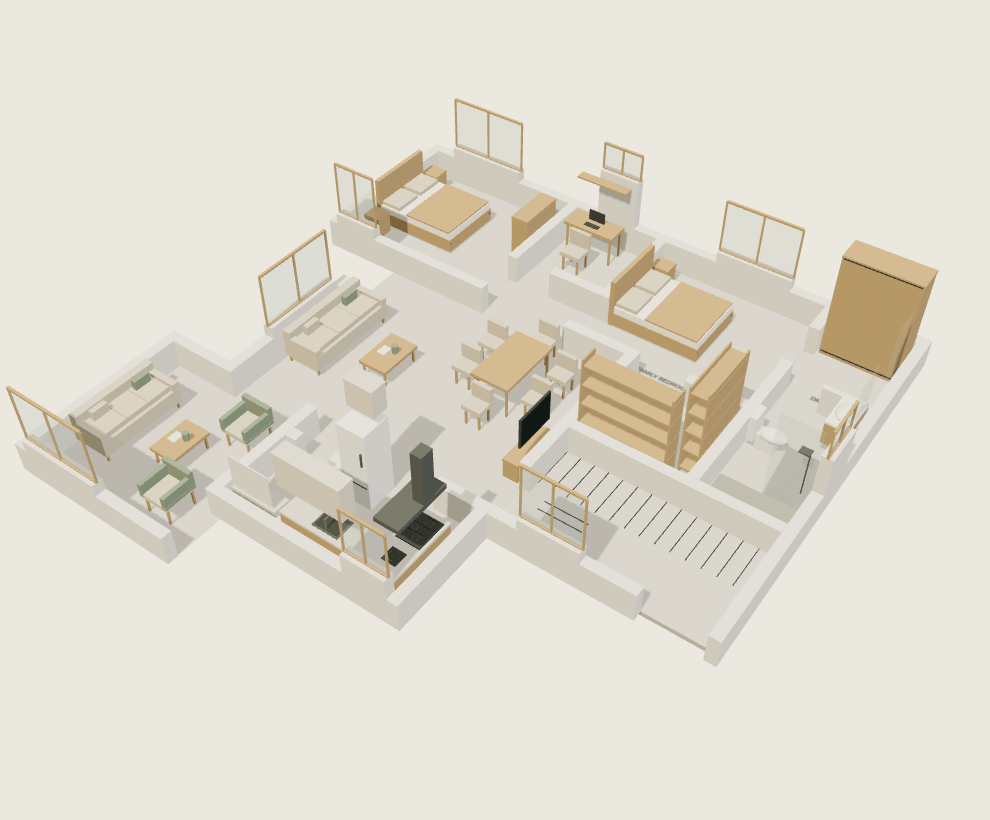
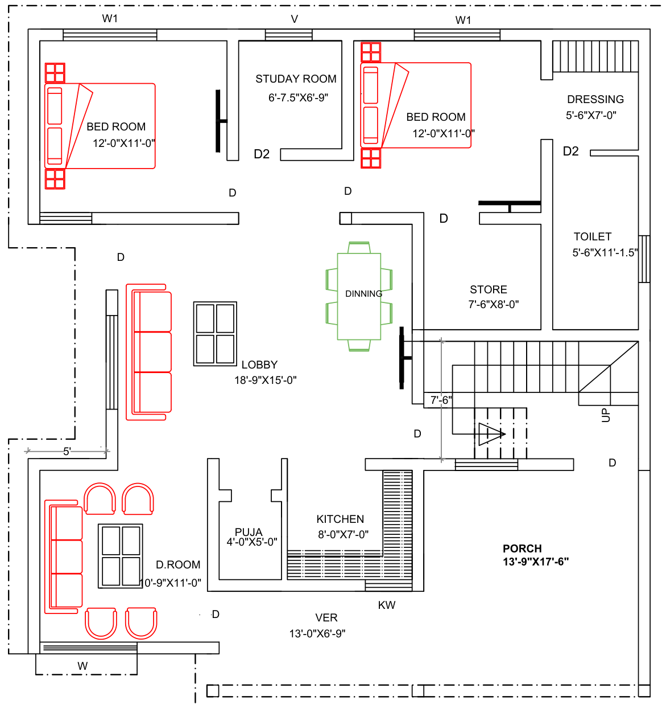

Light, washable walls
Warm ivory with a low-sheen washable finish. Inspect and fix dampness before painting. Paint colour has little effect on indoor heat compared with shade and insulation.
JAMMU / INTERIOR REVIEW 02
A light, modern home for your growing family. Warm ivory, quiet oak and considered details—inside the walls of your uploaded architectural plan.

Light · modern · minimal
Kitchen & puja positions retained
Bathroom route retained
View the source PDF →01 / A HOME YOU CAN EXPLORE
Start with the full layout. Choose a room for a closer cutaway, or compare directly with the source plan. Every furniture size shown is a design proposal.
Horizontal wall footprints come from the PDF. The PDF does not provide heights or door swings; 3.0 m walls and window heights are illustrative. Evening mood is a visual effect, not a lighting calculation. See the dimension checks →
02 / YOUR ROOM STUDIO
A consistent room sheet brings the furniture plan, materials, lighting and service questions together. Use the tabs to look at one layer at a time.
The room outline uses the drawn PDF footprint. Grey gaps at the perimeter are source openings; door swings and vertical dimensions are not supplied. Product footprints are proposals.
| Code / item | Quantity | Proposed W × D × H | Decision before ordering |
|---|
03 / THE ARCHITECTURAL REFERENCE
The uploaded file is the sole source for this architectural footprint. The older revision and unrelated concept images have been removed from the public presentation.

Open your original PDF →BANSI VERMA_010920.pdf / PAGE 1
Kept as drawnWall footprints, kitchen and puja positions, openings and the bathroom route via dressing.
Added as proposalsFurniture, finishes, lighting points, storage details and all vertical heights.
Still to resolveThree room labels disagree with the scaled wall faces. The model preserves the drawn walls instead of quietly stretching rooms.
Calibrated against the 40-foot dimension, then cross-checked against bedrooms, kitchen and bathroom. Drawn values below are rounded to the nearest millimetre for comparison, not claims of site accuracy.
| Space | Printed label, mm | Drawn footprint, mm | Review |
|---|
04 / ONE MATERIAL LANGUAGE
Room plans and item lists use the same finish codes. Approve real samples together in Jammu daylight and under your chosen lamps before committing to a supplier.
THE PURCHASE PLAN
Loose furniture + joinery reservations. Appliances, lights, paint and services remain in the cost plan; quantities need their own coordinated schedules.
| Room / item | Qty | W × D × H, mm | Finish | Status |
|---|
Point diagrams express intent. Fitting quantities, illumination levels, glare, fan clearances and electrical ratings require the final ceiling and appliance drawings.
| Code / purpose | Colour temperature | Control | To verify |
|---|
05 / COMFORT & MATERIALS
A yearly climate profile guides shading, ventilation and materials. The palette keeps the interior light; the building envelope does the thermal work.
A simple solar-geometry estimate at Jammu’s latitude places summer sunset near 298°—close to your NW rear at 301°. Winter sunrise is near 118°—close to your SE front at 121°. Use adjustable rear shade and retain controllable winter daylight at the front. These estimates assume a flat, open horizon. You reported a neighbour on the right/SW side; it has one floor, with a reported gap of at least 3 feet. Actual height and roof profile are not measured, so its shade cannot be quantified. You confirmed the front, rear and left are open. This supports planning controllable ventilation between those sides, subject to measured window and door geometry.
Digital colours are direction only. Try large physical samples in morning and evening light before ordering.
Warm ivory with a low-sheen washable finish. Inspect and fix dampness before painting. Paint colour has little effect on indoor heat compared with shade and insulation.
Exterior-grade plywood and sealed cut edges in wet areas. Keep kitchen bases off damp floors. Ask suppliers for the actual panel grade and warranty.
Matte porcelain in living areas; tested slip-resistant finishes in the bathroom. Select the exact product after sample testing, not from its colour alone.
Give the SW wall and NW rear openings special shade attention. Coordinate roof insulation, external shading and screened ventilation while the shell is being designed.
06 / YOUR COST PLAN
No budget has been fixed. You confirmed everything will be bought new. These broad planning allowances include furniture, lights, kitchen, paint and appliances, with no reuse credit. They are not local contractor quotations.
Including 15% contingency
Adjusts allowances, not actual supplier prices
| Included category | Planning range | What sets the cost |
|---|---|---|
| 15% contingency | Design changes and unforeseen fit-out costs |
Land, foundations/plinth, structure, masonry, roof, exterior windows and doors, exterior finishes, site works, design fees and statutory approvals are outside this interior allowance. Only the plinth is built, so you also need a measured civil-building BOQ. No civil cost is invented here. Two bedroom AC units are confirmed. Equipment type is pending; capacity needs a separate heat-load calculation for each bedroom.
07 / MAKE THIS HOME YOURS
Save notes as you explore. They stay in this browser on this device. Download the review notes and share the file in our chat when you want the next changes.
BEFORE DESIGN SIGN-OFF
Recorded from your answers and PDF.
This website: layouts, materials and design intent.
Architect and installers resolve dimensions and services.
Approve products, quotations and workshop drawings.
08 / DESIGN REFERENCES & EVIDENCE
Reference interiors guide the material language. Professional service guidance informs the room sheets and review process. Neither replaces your PDF or a measured technical design.
The website is a complete interior review package for the supplied plan, with outstanding decisions visible. It is not a construction issue: elevations, service calculations, workshop drawings and site sign-off are still required.